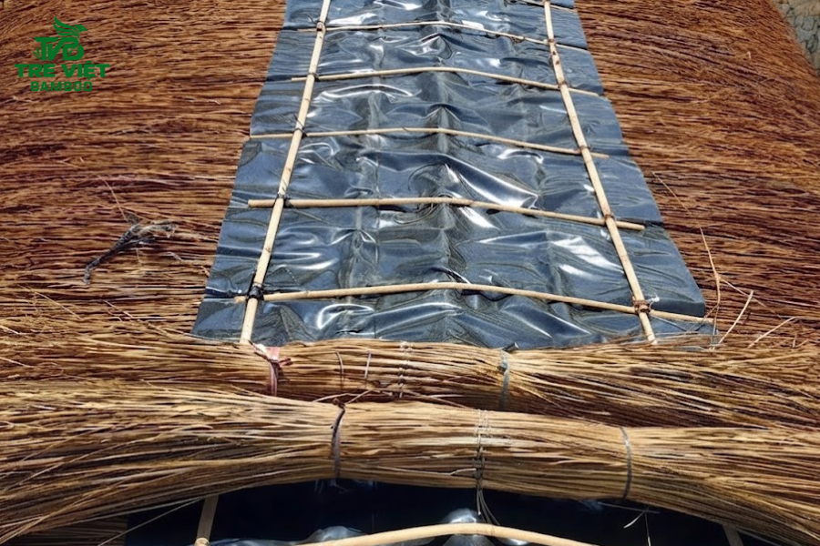
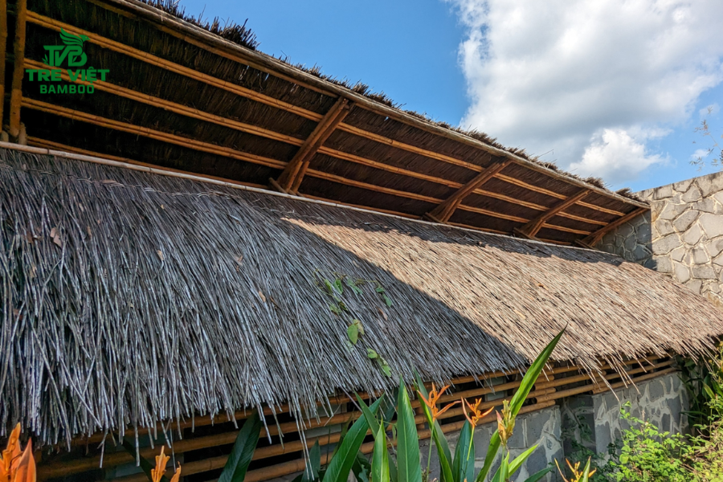
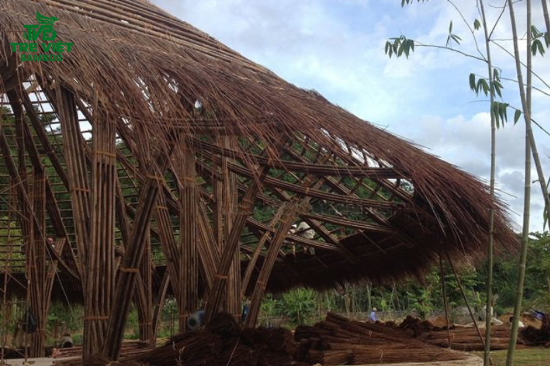
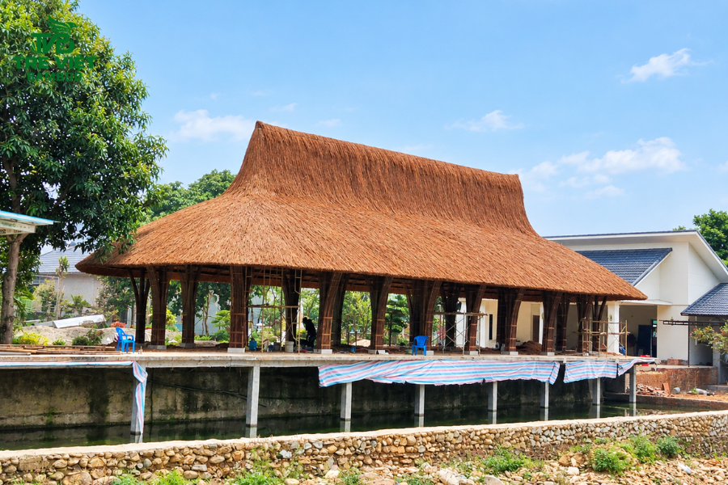

Cây tre luồng
Cây tre luồng được biết đến là một trong những loài tre có kích thước lớn và giá trị kinh tế, cơ học cao nhất. Nhờ sở hữu thân hình to khỏe, vách ống dày và…
Giá bán: Liên hệ

Giá bán: Liên hệ
Trong bối cảnh kiến trúc xanh lên ngôi, mái lá guộc đã và đang trở thành sự lựa chọn hàng đầu để thay thế các vật liệu công nghiệp. Không chỉ mang lại vẻ đẹp mộc mạc, đậm chất hoài cổ, sản phẩm này còn là giải pháp kỹ thuật ưu việt, giúp bảo vệ công trình của bạn trước tác động của thời tiết. Và trong bài viết hôm nay, Tre Việt Building sẽ chia sẻ tất tần tật những thông tin chi tiết về sản phẩm mái lá guộc để chủ đầu tư có thể nắm rõ trước khi đưa ra quyết định lựa chọn!
Mái lá guộc là sản phẩm tự nhiên được làm từ cây guộc (hay còn có tên gọi khác là cây vọt, cây tế) - Một loài cây thân thảo, dạng dây leo, mọc hoang dã ở các vùng miền đồi núi, rừng thứ sinh tại Việt Nam.
Thân cây guộc có hình trụ nhỏ, suôn thẳng. Khi được khai thác và phơi khô thì thân cây sẽ chuyển sang màu nâu đen đặc trưng, bề mặt trở nên nhẵn bóng. Và một trong những điểm đặc biệt của chất liệu này chính là kết cấu sợi cực kỳ dẻo dai, lớp vỏ ngoài cứng cáp, chứa nhiều tinh dầu, giúp chống lại sự xâm nhập của nước cũng như là sâu bọt gây hại.

Trong thời buổi hiện đại, sản phẩm mái lá guộc được giới kiến trúc sư toàn cầu đánh giá rất cao nhờ vào việc sở hữu nhiều đặc tính vật lý ưu việt, vượt xa các loại mái lá thông thường khác. Cụ thể như sau:
Nhờ có lớp vỏ cứng, bóng, mái lá guộc khi được đội ngũ thi công lợp đúng kỹ thuật thì đảm bảo sẽ không bị mục nát hay phân hủy nhanh như là cỏ tranh, lá cọ. Đặc biệt, tuổi thọ của vật liệu tự nhiên này có thể kéo dài lên đến 10 hay 15 năm, thậm chí có thể là lâu hơn nếu như được bảo trì thật tốt.
Mái lá guộc khi lợp dày tạo ra một hệ thống các lớp không khí tuần hoàn, cản lại bức xạ nhiệt từ mặt trời rất tốt. Dưới mái guộc, nhiệt độ luôn luôn thấp hơn đáng kể, tạo cảm giác mát mẻ vào mùa hè, giữ ấm vào mùa đông.
Bề mặt thân guột trơn bóng nên nước mưa trượt đi rất nhanh, đảm bảo không xảy ra hiện tượng ngậm nước. Kết hợp với độ dốc mái chuẩn, mái lá guộc sẽ giúp cho công trình kiến trúc của bạn không bao giờ bị dột hoặc ẩm thấm vào mùa đông, mùa mưa gió.
Chính sự dẻo dai của lá guộc cho phép các thợ thi công dễ dàng trong việc tạo hình, uốn cong theo các thiết kế phức tạp. Phải kể đến như mái vòm, mái dốc,...

Việc lựa chọn mái lá guộc mang lại rất nhiều giá trị thiết thực cả về mặt kinh tế lẫn tính thẩm mỹ:
Tạo điểm nhấn thẩm mỹ độc bản: Màu nâu đen bóng bẩy lá lá guộc mang lại nét hoài cổ, sang trọng và vô cùng bí ẩn, rất phù hợp cho các không gian resort, nghỉ dưỡng, nhà hàng sinh thái,...
Tối ưu chi phí dài hàn: Mặc dù chi phí đầu tư ban đầu cho mái lá guộc là cao hơn so với một số loại lá khác, thế nhưng, với chất lượng cao, tính bền bể và tuổi thọ vượt trội, chủ đầu tư sẽ loại bỏ được hoàn toàn chi phí bảo trì, dửa chữa và thay mới liên tục.
Thân thiện và an toàn: Lá guộc là vật liệu tự nhiên 100%, không hóa chất độc hại. Vậy nên, việc thi công mái lá guộc là an toàn tuyệt đối cho sức khỏe của người thi công, người sử dụng. Và từ đó góp phần vào công cuộc bảo vệ môi trường sinh thái.

Tại Tre Việt Building, mỗi công trình mái lá guộc không chỉ là một sản phẩm kiến trúc mà còn là kết tinh của sự tỉ mỉ, hiểu biết sâu sắc về vật liệu tự nhiên và kỹ thuật truyền thống. Dưới đây là quy trình thi công chuẩn chỉnh, đảm bảo chất lượng và tính thẩm mỹ cao mà bạn có thể tham khảo
Trước tiên, đơn vị chúng tôi sẽ lắng nghe nhu cầu khách hàng, từ mục đích sử dụng, diện tích không gian, phong cách kiến trúc cho đến nguồn ngân sách mà khách hàng dự kiến. Dựa trên thông tin đó, đội ngũ chúng tôi sẽ phân tích kỹ lưỡng, tư vấn định hướng và hướng dẫn khách thực hiện các bước tiếp theo.
Công cuộc tiếp theo đó chính là khảo sát địa hình, nghiên cứu hướng nắng, hướng gió, độ ẩm, các yếu tố môi trường cần thiết tại vị trí thi công thực tế. Qua đó, kiến trúc sư của Tre Việt Building sẽ đưa ra được phương án thiết kế sơ bộ, lựa chọn cấu trúc khung tre - mái lá guộc chất lượng và phù hợp nhất.
Tiếp theo, đội ngũ sẽ dựng bản vẽ 2D/3D hoàn chỉnh. Cung cấp bảng báo giá chi tiết, trọn gói, rõ ràng và minh bạch cho khách hàng, bao gồm có các thông tin chính: Chi phí vật liệu, nguồn nhân công, tiến độ thi công, chính sách bảo hành.

Sau khi đã thống nhất 100% phương án, Tre Việt Building và đối tác ký kết hợp đồng. Ngay lập tức, đội ngũ nhân công của chúng sẽ bắt tay vào khâu tuyển chọn, tập kết nguyên liệu lá guộc đạt chuẩn tại xưởng.
Định vị chính xác mặt bằng theo bản vẽ. Đào móng, chôn cột tre với độ sâu khoảng từ 50 - 70cm, đổ bê tông cố định chân cột để giúp kết cấu chịu lực được vững chắc.
Lắp ráp hệ thống xà ngang, xà dọc, khớp nối các cấu kiện để tạo nên bộ khung hoàn chỉnh. Tiếp tục cố định toàn bộ mối nối bằng dây buộc truyền thống, hoặc là bu lông tùy vào yêu cầu kỹ thuật thực tế của công trình.
Lắp đặt hệ thống xà mái, giằng chéo cùng các thanh li tô đỡ lá. Đây cũng chính là bước then chốt, quan trọng để giúp mái lá guộc có thể duy trì được kết cấu bền vững lâu dài, an toàn trước thời tiết mưa bão khắc nghiệt tại một số địa phương.
Tiếp theo, đội ngũ Tre Việt Building tiến hành lợp lá theo nguyên tắc từ dưới diềm mái tiến dần lên đến đỉnh. Các lớp guộc sẽ được xếp chồng khít lên nhau, đạt đến một độ dày lý tưởng (thường là 18 - 20cm), giúp tối ưu khả năng thoát nước, cách nhiệt, chống ẩm mốc hiệu quả.
Hoàn thiện kiến trúc tổng thể: Khi đã hoàn thành mái lá guộc, tiếp đến là bước hoàn thiện kiến trúc tổng thể. Triển khai thi công vách, cửa, sàn và trang trí nội - ngoại thất bằng vật liệu tự nhiên nếu khách có yêu cầu. Tích hợp thêm hệ thống đèn điện chiếu sáng, mành che nắng theo đúng thiết kế bản vẽ.
Cuối cùng, nghiệm thu chất lượng, vệ sinh công trình, bàn giao đúng tiến độ cho khách. Đặc biệt, tại Tre Việt Building, chúng tôi áp dụng chính sách bảo hành uy tín, hỗ trợ bảo trì định kỳ, đảm bảo cho công trình của bạn luôn trong trạng thái bền, đẹp, chất lượng nhất.

Việc khai thác nguyên liệu đạt chuẩn, thi công lợp mái lá guộc cần đòi hỏi nhân công có tay nghề cao. Và Tre Việt Building tự hào là đơn vị tổng thầu chuyên nghiệp trong lĩnh vực cung cấp vật tư, thi công mái lá guộc chất lượng trọn gói.
Tre Việt Building đã kết hợp và triển khai hơn 150+ dự án trong và ngoài nước. Trong đó có rất nhiều công trình nhà hàng, không gian F&B tại TP.HCM. Đây cũng là cơ sở để khách hàng tham khảo cách vật liệu tự nhiên được đưa vào không gian thực tế, thay vì chỉ là nhìn qua mẫu hay hình ảnh.
Chúng tôi cam kết cung cấp nguồn nguyên liệu lá guộc phơi khô, đều màu loại 1. Ngoài ra, đơn vị còn sở hữu đội ngũ thợ lành nghề, giàu kinh nghiệm, đảm bảo công trình của bạn không chỉ đạt đến độ bền tối đa mà còn sở hữu vẻ đẹp kiến trúc hoàn mỹ.
Vậy, nếu bạn đang tìm kiếm giải pháp lợp mái cho nhà hàng, homestay, resort, hoặc không gian sống sinh thái, hãy liên hệ ngay với Tre Việt Building để nhận tư vấn kỹ thuật và báo giá chính xác nhất nhé!
Thông tin liên hệ:
CÔNG TY TRÁCH NHIỆM HỮU HẠN TRE VIỆT BUILDING
Địa chỉ: 917 Phạm Văn Đồng, Phường Linh Xuân, Thành phố Hồ Chí Minh
Nhà máy sản xuất: Phú Hợp B, Xã Phú Lâm, Đồng Nai.
Điện thoại – Zalo: 087.6915.999
Email: info@treviet.com.vn
treviet23@gmail.com
Cây tre luồng được biết đến là một trong những loài tre có kích thước lớn và giá trị kinh tế, cơ học cao nhất. Nhờ sở hữu thân hình to khỏe, vách ống dày và…
Giá bán: Liên hệ

Thi công ốp tre trúc trang trí của đơn vị Tre Việt Building đã mang đến những công trình bằng tre rất bền và đẹp tuổi thọ 10 năm cho đến 15 năm.
570.000 ₫

Tre việt Building đơn vị tiên phong đưa vật liệu chống nóng bằng sản phẩm tự nhiên vào thiết kế của mình. trong đó thi công lợp mái lá (lợp guộc) hiệu quả cao
650.000 ₫